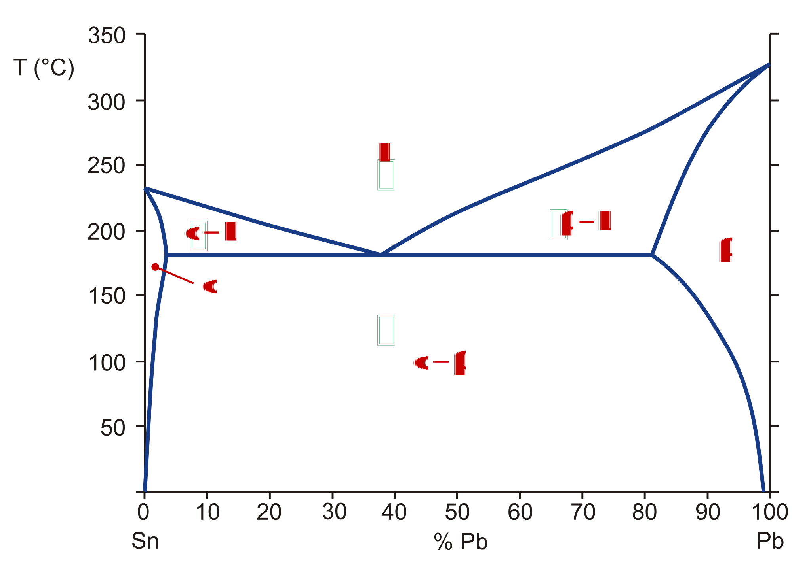
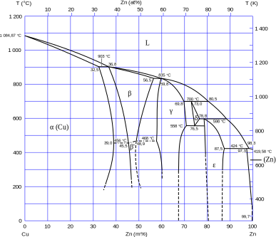

Aliatges#
Pàgina en desenvolupament
Encara estem treballant en aquest document.
Esperem oferir-vos properament el seu contingut.
Disculpeu les molèsties.
Un aliatge és una barreja homogènia de dos o més elements, dels quals com a mínim un ha de ser un metall. Aquest compost pot tenir propietats ben diferents dels elements constituents. De vegades només una petita proporció d’un dels components pot canviar molt les propietats de l’aliatge.
Alguns aliatges comuns:
Acers |
Acers inoxidables |
Llautó |
Bronzes |
Amalgames |
Duralumini |
|---|---|---|---|---|---|
Fe, C |
Fe, Cr, Ni |
Cu, Zn |
Cu, M(Sn) |
Hg, M |
Al, Cu, Mg, Mn, Si |
Alpaca |
Nicrom |
Alnico |
Constantà |
Nitinol |
Zamak |
|---|---|---|---|---|---|
Zn, Cu, Ni |
Ni, Cr |
Co, Al, Ni |
Cu, Ni |
Ni, Ti |
Zn, Al, Mg, Cu |
De fet utilitzem més els aliatges que els metalls purs. Rarament fem servir ferro dolç (ferro pur), únicament en nuclis d’electroimants; normalment fem servir acers i foses, que milloren les propietats mecàniques del ferro. Quan al taller soldem amb estany en realitat ho fem amb un aliatge amb aquest metall com a principal component, però amb altres metalls que baixen el seu punt de fusió (típicament es feia servir plom, amb una proporció 60% Sn / 40% Pb; avui en dia s’evita utilitzar el plom donada la seva toxicitat). La majoria d’objectes metàl·lics daurats que veiem estan fets amb llautó.
Tipus d’aliatges#
Els aliatges poden ser de tipus substitucional: alguns àtoms de la xarxa es substitueixen per àtoms d’altre element. És el cas del llautó, on alguns àtoms de Cu es substitueixen per Zn.
Una altra opció és encabir àtoms d’un altre element en els espais que deixen lliures els àtoms metàl·lics entre ells, són els aliatges intersticials. Un exemple és l’acer, on àtoms de C s’infiltren entre els àtom de Fe.
Podem tenir un aliatge mixt, com és el cas de l’acer inoxidable: àtoms de Ni i Cr substituint Fe amb àtoms de C infiltrats.

Diagrama de fases#
La millor forma de representar un aliatge és amb un gràfic amb el percentatge d’un dels constituents al eix x i la temperatura al eix y. Aquest gràfic s’anomena diagrama de fases.
.png)
Fixeu-vos en el diagrama de fases Ta-W. A l’eix x hem representat el % de W: a l’esquerra tenim Ta pur, a la dreta W pur. Únicament en aquests extrem tenim una temperatura de fusió constant, característica de les substàncies pures. Al mig tenim una zona, entre la línia contínua (per sota d’ella tenim sòlid) i la discontínua (per sobre d’ella tenim líquid) en que coexisteixen es fases sòlida i líquida.
Aquesta coexistència de fases la trobarem freqüentment als aliatges.
Punt eutèctic#
En alguns aliatges trobem un comportament peculiar al diagrama de fases: per a una certa composició (anomenada composició eutèctica) el canvi de sòlid a líquid es realitza a temperatura constant (anomenada temperatura eutèctica), com si es tractés d’una substància pura. Fixeu-vos en el cas del Sn-Pb: té un punt eutèctic amb un 61,9 % de Sn i 183 °C, temperatura per sota dels 232 °C a que fon el Sn pur i els 327 °C del Pb pur. Per això s’utilitza o utilitzava estany amb una composició Sn 60 % / Pb 40 % per soldar al taller.

Fixeu-vos com en aquest cas com domina l’estructura de xarxa de l’estany quan tenim poc plom (α) i com domina l’estructura de xarxa del plom quan tenim poc estany (β). Per altres concentracions tenim una barreja d’ambdues xarxes (α+β).
Diagrama de fases Fe-C#
Com l’aliatge Fe-C és de tipus intersticial, només arriba al 6.67 % de C, que representa que el C ha omplert tots els forats existents a la xarxa de Fe.

Fixeu-vos quin diagrama més ric: per sota del 2,1 % de C tenim els acers, per sobre les foses. Apareix un punt eutèctic amb un 4,3 % de C, i un punt eutectoide amb el 0,77 %. L’anomenem punt eutectoide perquè no hi ha un canvio d’estat, l’austenita també és un sòlid. Justament l’existència de l’austenita diferencia als acers de les foses: si l’acer el tenim en fase austenita i el refredem ràpidament podrem congelar aquesta estructura de xarxa a temperatura ambient (martensita). Això no ho podem fer amb les foses.
Els llautons#

Com veieu els llautons també presenten una gran riquesa de fases (en té 6), que es manifesta en la complexitat del seu diagrama. El Cu és mal·leable i dúctil. El Zn és dur i té una gran resistència metàl·lica. Quan els barregem obtenim diferents comportaments:
Amb un 75-85% de Cu l’aliatge és vermellós/daurat i mal·leable
Amb un 60-70% de Cu el llautó és groc i mal·leable
Per sota del 50% de Cu l’aliatge és blanc, no mal·leable i trencadís.